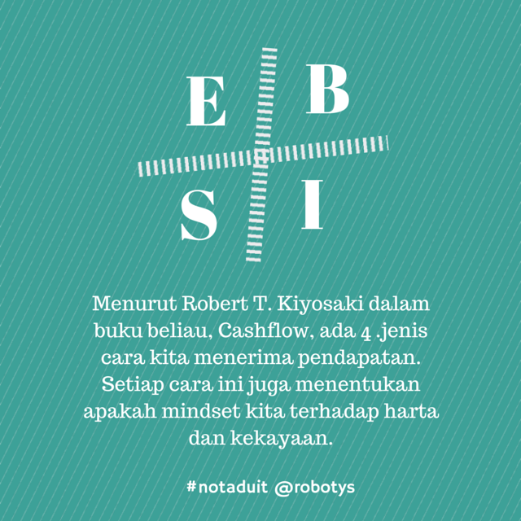

4 Jenis Pendapatan Yang Menentukan Siapakah Kita
Kita sudah tahu yang dalam setiap bidang pendapatan, ada yang berjaya antara majoriti yang tidak berjaya. Dan setelah kita selidik kita juga tahu 9 kriteria yang menjadikan mereka berjaya dan kaya harta.
Namun kita belum tahu lagi dengan lebih terperinci.
Menurut Robert T. Kiyosaki dalam buku beliau, Cashflow, ada 4 jenis cara kita menerima pendapatan. Setiap cara ini juga menentukan apakah mindset kita terhadap harta dan kekayaan.
4 cara tersebut adalah:
1) Employee, atau Pekerja.
2) Self-employed, atau Bekerja Sendiri
3) Business Owner, atau Usahawan
4) Investor, atau Pelabur
Setiap cara tersebut mempunyai mindset yang tersendiri. Malah, untuk beralih dari satu cara ke cara yang lain, ia memerlukan kita mampu menukar mindset kita dengan betul dan kukuh. Ini yang menjadikan ramai kita bertelagah sesama sendiri.
Contohnya, Pekerja. Pekerja mindsetnya 'Saya Yang Menurut .Perintah'. Mereka menurut arahan daripada pengurus atau ketua mereka dan cuba sedaya upaya menyiapkan arahan tersebut dengan sebaik mungkin. Pekerja yang bagus adalah pekerja yang siap kerja on-time mengikut spesifikasi dan bajet yang telah ditetapkan. Mindset pekerja juga termasuk 'Saya Mahu Gaji Saya On-Time!'.
Self-employed pula mempunyai mindset 'Kalau Aku Tak Kerja Aku .Tak Makan'. Kebanyakan Self-employed datang daripada kotak Pekerja yang muak dan jelak dengan tempat kerja mereka. Maka beliau keluar dan bergerak solo. Fasa permulaan memang semuanya indah-indah belaka. Namun apabila duit simpanan mencecah kosong, dan tiada kerja yang masuk, barulah self-employed ini sedar apa yang mereka dalam masalah yang lebih besar berbanding semasa menjadi pekerja dahulu. Namun nasib baik mereka yang mengawal keadaan. Keadaan menjadi semakin baik apabila self-employed berusaha dengan lebih tersusun dan mempunyai mentor dan strategi yang bagus.
Cara ketiga adalah jalan Usahawan. Usahawan adalah mereka yang .mempunyai bisnes sendiri. Apa yang membezakan usahawan dengan self-employed? Usahawan mempunyai struktur syarikat yang kukuh, mempunyai staf yang menggerakkan syarikat dan mempunyai sistem bisnes yang efisien. Pada usahawan, syarikat mereka adalah mesin buat duit yang kompleks dan cool. Mindset usahawan adalah "Efisienkan Sistem Bisnes". Sasaran mereka adalah menghasilkan syarikat yang apabila dilaburkan satu ringgit ke atas syarikat itu, ia menghasilkan dua ringgit kepada usahawan. Pada mereka Usahawan digelar 'usahawan' kerana mereka ber'usaha' ke atas bisnes mereka.
Cara Keempat adalah Pelabur. Ini adalah tingkat yang paling .tinggi. Pelabur adalah mereka yang meletakkan pendapatan lebihan dan/atau simpanan mereka ke dalam bisnes sendiri atau bisnes orang lain agar ia memberi pulangan yang lebih tinggi. Pelaburan menuntut ilmu dan disiplin bidang yang tinggi untuk mengelakkan pelaburan 'bodoh'. Ya, pelaburan mungkin sahaja rugi, tapi biarlah rugi tersebut sudah dalam jangkaan dan dalam kawalan. Bukan rugi yang merosakkan diri.
Seperti yang kita tahu tadi, kita boleh berubah daripada satu kotak ke kotak yang lain.
Bukan itu sahaja.
Kita malah boleh berada dalam banyak kotak pada satu-satu masa.
Mungkin kita kerja makan gaji sepenuh masa. Tetapi kita boleh menjalankan perniagaan secara kecil-kecilan dengan 2 atau 3 orang staf.
Atau kita self-employed dan mempunyai portfolio pelaburan yang mampu menanggung belanjawan bulanan kita.
Yang penting, sekarang kita tahu letak duduk di mana kita sekarang dan ke kotak mana kita mahu tuju. Barulah kita boleh tahu siapa kita mahu rujuk dan daripada mana kita boleh timba ilmu untuk berjaya dalam kotak tersebut.
Baca Lagi Banyak Artikel Tentang Nota Duit dan Kewangan Peribadi:
Jika anda adalah orang yang berusaha bangkit dari kegagalan kewangan, atau pemuda pemudi yang baru mengenal dnia kewangan, sambung baca lebih banyak lagi artikel duit di laman web berikut: Notaduit.com
Jika mahu baca dengan lebih mudah dan cepat, boleh dapatkan terus eBook koleksi nota-nota tentang duit bertajuk "NotaDuit, Formula Kewangan Makan Gaji Tapi Senang Hati" berikut. Klik, gambar buku untuk ke laman web ebook #notaduit

All Rights Reserved Robotys.net © 2015